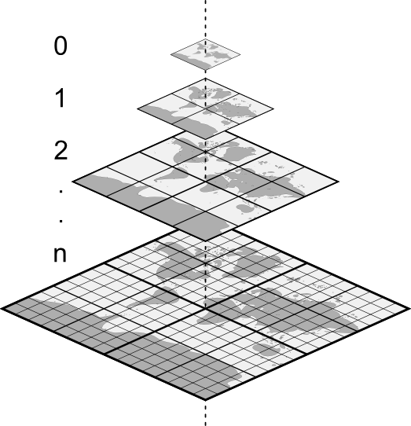
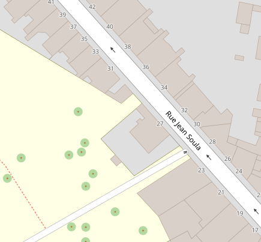
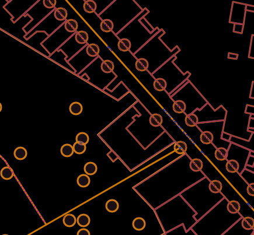

<!DOCTYPE html>
<html lang="en">
  <head>
    <meta charset="utf-8" />
    <meta name="viewport" content="width=device-width, initial-scale=1.0, maximum-scale=1.0, user-scalable=no" />

    <title>2023 - Démystifions les tuiles vectorielles</title>
    <link rel="shortcut icon" href="./favicon.ico" />
    <link rel="stylesheet" href="./dist/reset.css" />
    <link rel="stylesheet" href="./dist/reveal.css" />
    <link rel="stylesheet" href="./dist/theme/white.css" id="theme" />
    <link rel="stylesheet" href="./css/highlight/base16/zenburn.css" />

    <link rel="stylesheet" href="./_assets/style.css" />

  </head>
  <body>
    <div class="reveal">
      <div class="slides"><section  data-markdown><script type="text/template">

# Démystifions les tuiles vectorielles

## SotM FR 2023

Frédéric Rodrigo - Teritorio

frederic@teritorio.fr
</script></section><section  data-markdown><script type="text/template">
## Tuiles

- Carré, bout de carte
- Subdivision récursive

<br/>


</script></section><section  data-markdown><script type="text/template">
## Raster

- Dessin, tuiles image (png, jpeg, webp)
- Rendu coté serveur
- Limité a des incréments de zoom

<br/>

</script></section><section ><section data-markdown><script type="text/template">
## Vecteur

- Données, géométries, attributs
- Style appliqué coté client
- Zooms intermédiaires
- Overzoom, affichage correct à un zoom infini, z14+
- Accès aux données

<br/>

</script></section><section data-markdown><script type="text/template">
### Schéma des tuiles

- Données -> Tuiles images (PNG)
- Données -> Tuiles vectorielles (MVT) (-> Tuiles images)

Étape intermédiaire
- Schéma intermédiaire de données
- Mise en cache pour tous les styles
</script></section><section data-markdown><script type="text/template">
### Structure

Fichiers binaires MVT/PBF

- Couches de donnes
- Géométries : point, linge, polygone
- Attributs, clé-valeurs
- Stockage uniquement des attributs présents
- Grille entières à coordonnées relatives

[Spécification MVT](https://docs.mapbox.com/vector-tiles/specification/)
</script></section></section><section  data-markdown><script type="text/template">
## Fournisseurs de tuiles

* Mapbox : schéma Mapbox©
* Maptiler : schéma OpenMapTiles
* JawgMaps : schéma OpenMapTiles
* Geobarik (new) : schéma Shortbread
* Teritorio : schéma OpenMapTiles avec ajouts
* IGN : schéma IGN
* ...
* toi et moi : schéma que l'on veut (mais pas Mapbox©)
</script></section><section  data-markdown><script type="text/template">
## Produire des tuiles

- Données personnalisées statiques
  - QGis
  - Tippecanoe
- Dynamique : Postserv, Postile, Tilekiln, T-rex, Tegola, pg_tileserv, Martin...
- OSM statique
  - [OpenMapTiles](https://github.com/openmaptiles/openmaptiles) : schéma [OpenMapTiles](https://openmaptiles.org/schema/)
  - [Planetiler](https://github.com/openmaptiles/planetiler-openmaptiles) : schéma OpenMapTiles
  - [Tilemaker](https://github.com/systemed/tilemaker)
    - schéma OpenMapTiles
    - schéma [Shortbread](https://shortbread.geofabrik.de/schema/1.0/)
</script></section><section  data-markdown><script type="text/template">
## Servir des tuiles

- [TileJSON](https://github.com/mapbox/tilejson-spec)
    - Descripteur de service de tuiles
    - [Attribution](https://vecto.teritorio.xyz/styles/openstreetmap-carto/style.json)
- MBTiles : tileserver-gl...
- PMTiles : besoin de rien
</script></section><section  data-markdown><script type="text/template">
## Styles

Styles standards de base :
- « Street »
- Colorée
- Activité d’extérieur
- Blanc & Noir
- Nuit
- ...

Galerie https://vecto-dev.teritorio.xyz/

Les styles ne sont pas compatibles entre schéma.
</script></section><section  data-markdown><script type="text/template">
## Afficher des tuiles

- MapLibre/Mapbox GL
  - [MapLibre GL JS](https://maplibre.org/maplibre-gl-js-docs/api/) / [Mapbox GL JS](https://docs.mapbox.com/mapbox-gl-js/api/) (Web)
  - [MapLibre GL Native](https://github.com/maplibre/maplibre-gl-native) / [Mapbox GL Native](https://github.com/mapbox/mapbox-gl-native) (PC, Mobile)
- [OpenLayer](https://openlayers.org/)
- Leaflet (solution déconseillé)
  - [Leaflet](https://leafletjs.com/) + [Mapbox GL Leaflet](https://github.com/mapbox/mapbox-gl-leaflet)
  - [Leaflet](https://leafletjs.com/) + [Leaflet.VectorGrid](https://github.com/Leaflet/Leaflet.VectorGrid) (très partiel)
- QGis
</script></section><section  data-markdown><script type="text/template">
## Possibilités

- Multilingues
- Frontières alternatives

- Interrogation des données
- Interactivité

- Zooms intermédiaires, Overzoom
- Rotation, inclinaison
- 3D
- Ombrage dynamique, Terrain 3D
</script></section><section  data-markdown><script type="text/template">
<iframe src="https://teritorio.github.io/teritorio-map/demo-fr.html#5.03/46.1/0.62" width="90%" height="700"></iframe>
</script></section><section  data-markdown><script type="text/template">
## Maputnik

### L'édition de style coté client

https://maputnik.github.io/

- Utilisation de tuiles distantes
- Accès direct aux propriétés des calques
- Inspecteur
</script></section><section  data-markdown><script type="text/template">
### Pour le contributeur ?

- Pas de mise à jour par diff,
  - mais recalcul rapide
  - max z14 + overzoom
- Pas de schéma avec tout

<br/>
<br/>

### OSM Carto (aka Mapnik) ?

- plusieurs copies : [Geofabrik](https://github.com/geofabrik/openstreetmap-carto-vector-tiles), [OpenMaptTiles](https://vecto-dev.teritorio.xyz/styles/osm-openmaptiles-gl-style/?vector#15.35/43.295265/5.365322)
- mais pas l'original, longue préparation du style et des outils
</script></section><section  data-markdown><script type="text/template">
##  Conclusion

- Mieux que le raster
  - Plus rapide à produire
  - Plus simple à produire
  - Viens avec l'attribution
  - Édition de styles sans données
  - Plus de possibilité, multilingue, interaction...
  - Plus léger
- Mois
  - Tuiles vecto à adapter pour des usages spécifiques
  - Pas de mise à jour par diff
</script></section></div>
    </div>

    <script src="./dist/reveal.js"></script>

    <script src="./plugin/markdown/markdown.js"></script>
    <script src="./plugin/highlight/highlight.js"></script>
    <script src="./plugin/zoom/zoom.js"></script>
    <script src="./plugin/notes/notes.js"></script>
    <script src="./plugin/math/math.js"></script>
    <script>
      function extend() {
        var target = {};
        for (var i = 0; i < arguments.length; i++) {
          var source = arguments[i];
          for (var key in source) {
            if (source.hasOwnProperty(key)) {
              target[key] = source[key];
            }
          }
        }
        return target;
      }

      // default options to init reveal.js
      var defaultOptions = {
        controls: true,
        progress: true,
        history: true,
        center: true,
        transition: 'default', // none/fade/slide/convex/concave/zoom
        slideNumber: true,
        plugins: [
          RevealMarkdown,
          RevealHighlight,
          RevealZoom,
          RevealNotes,
          RevealMath
        ]
      };

      // options from URL query string
      var queryOptions = Reveal().getQueryHash() || {};

      var options = extend(defaultOptions, {"controls":true,"progress":true}, queryOptions);
    </script>


    <script>
      Reveal.initialize(options);
    </script>
  </body>
</html>
